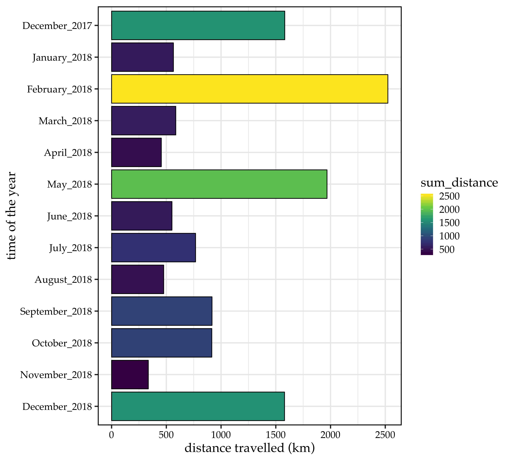
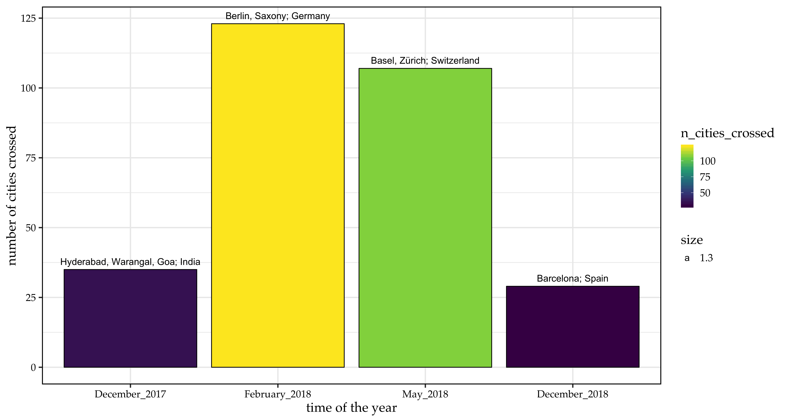
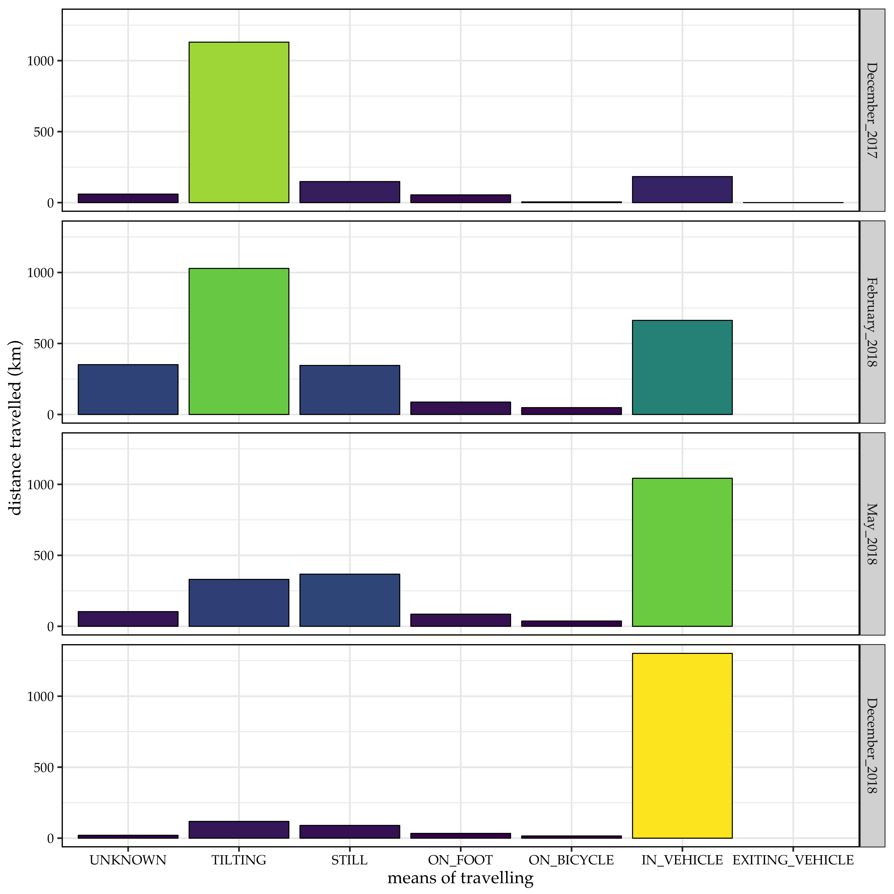
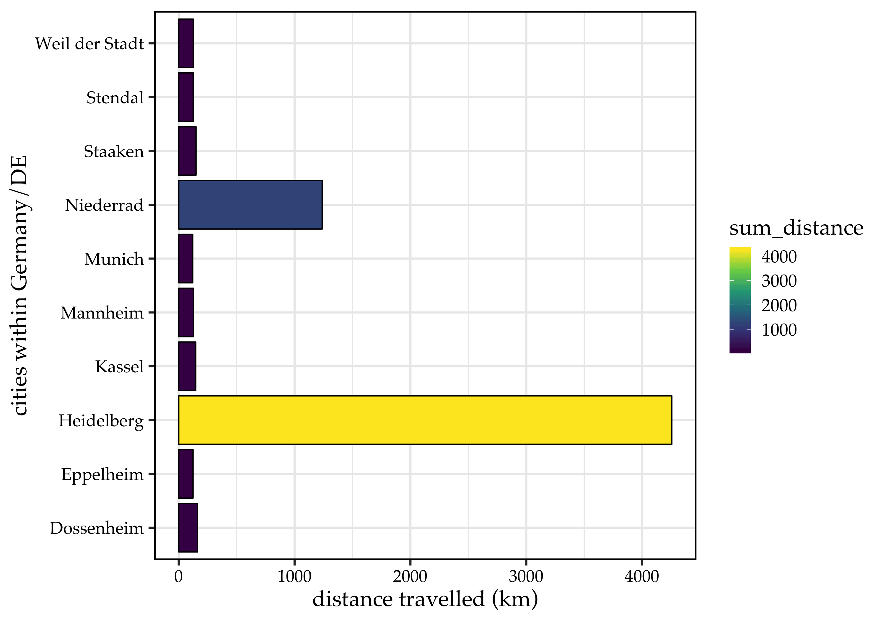
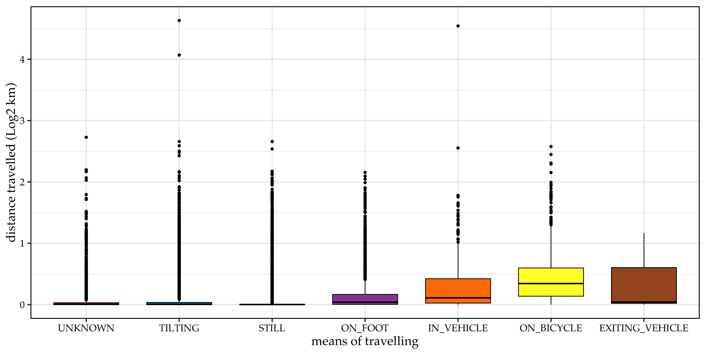
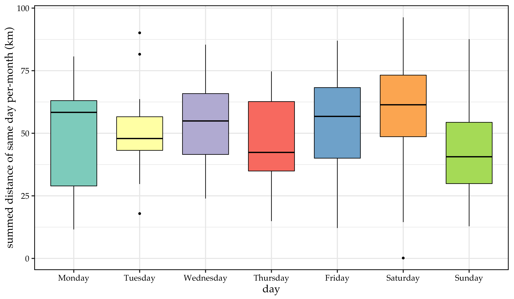

I never thought of looking back on my travel history until I saw this article. Immediately, I decided to download my data and explore it from different angles. Here, I performed a bit of exploratory analysis on my google location history data of past one year, December, 2017 - December, 2018.
Why one year? Well, I never had an android phone until April, 2017. Even after that I haven’t used mobile internet for a long time. My google location history data itself started in December 2017. In other words, I had no choice but to use data from December, 2017.
Some points before jumping into the data
-
At the moment, I am residing in Heidelberg, Germany and travel to different European countries once in a while.
-
In December, 2017, I went back to India in the beginning of the month and returned to Germany by the end of the month. For the most part, I travelled in India and used the mobile internet frequently.
-
I downloaded google location history data on 22nd December, 2018, so I restricted data from December, 2017 to before 22nd.
-
There are different types of attributes in downloaded json file. I do not need all attributes for my analysis. If you would like to know the meaning of different attributes check this post.
-
Briefly, I kept the following attributes,
-
timestampMs, time at the point google tracked my location. This format is converted to regular human readable format. -
latitudeE7, lattitude of the location. -
longitudeE7, longitude of the location. Later in the analysis, these lattitude & longitude combinations are used to predict the city name and country. Also to calculate the distance travelled. -
accuracy, accuracy of the tracking (lower the number, higher the accuracy). I filtered for data with < 1000 accuracy value. -
activity, means of travelling while tracking. There are multiple types withinactivity, e.g.BY_FOOT,WALKING..etc. -
activity_confidence, confidence with whichactivityis predicted. Higher the value, higher the confidence. I filtered for >10 confidence value.
-
Okay, let’s not wait to eat the delicious cookie,
How much distance did I travel per-month?
Here, I calculated the distance travelled (in kilometers) per-month for the past one year

Huh, interesting. I was feeling my 2018 was pretty boring. I totally forgot the big peaks in Feb & May, 2018. That made me feel better. I wanted to look at where did I travel to in these times along with December, 2017.
So, I took out the data for these 4 months and calculated the number of cities I crossed while travelling to & back from the major destination point. I am really curious to know how many cities contributed to these 1000s of kilometers.
Here it is

One interesting obsevration here is that, I travelled to 3 to 4 big cities in December, 2017 in India. But only one place, Barcelona; Spain, in December, 2018. The number of cities contributing to these two months are very closer (December-2017, 35; December-2018, 29). This might be due to, in europe, the city boundaries are very small and zip codes are very different within a small region. Where as in India, cities are spread across a very wide region. (Note: This is just a hypothesis)
So far so good. Now I would like to see by which means of transportation did I travel in these 4 months. As I explained in the beginning, activity type represents the means of transporation. Unfortunately, there are some attributes for which I did not find proper meaning, e.g. TILTING, STILL. However, I included them in the analysis to know how many kilometers this transportation contributed.

I felt little ambiguous interpreting this results. As I mentioned, there are some ambiguous terms for which I was not able to figure out the meaning. However, I would hazard a guess for some of these depending on the transportation I took (and remember). In December, 2018, I definitely travelled more by train than bus, so I believe, IN_VEHICLE means to a high degree, train. This makes sense for the same attribute in December, 2017. I travelled by bus more than train in India. Again this is consistent with big peaks in February, 2018, in which I’ve been on a long road trip by car. All in all, bus/car and train journeys are not much different in the data I analyzed here. One more observation here is in Feb & May, 2018, ON_FOOT distances are closer (and higher), which suggests that europe, to a high degree is a place to experience by walk looking at historical architectures and beautiful streets.
How did google perform in 2018 in Germany?
Now, I only looked at 2018, Germany data. I took top 10 cities within Germany which has the highest distances recorded according to google.

These results are pretty obvious except the Niederrad. I consciously never been to this place and it doesn’t even seem to be closer to Heidelberg. I suspect, this place is closer/overlapping a place where I frequently travel to but because of zip code change, google must assigned a different city name. Otherwise, I’m completely not sure how this came out to be one of the top 10 cities (Or this might be a mistake from google).
How about my favourite city Heidelberg?
Finally, I looked into the data concerning only Heidelberg in 2018. I calculated the distance travelled by different means of and how the distances are distributed over a week, meaning on which day I travlled most or least.
As I have shown the total distance assigned to Heidelberg in above plot, I will not show it again.
Different transportation means within Heidelberg, 2018

Of course, I use bike most of the times within Heidelberg. There are some outliers within TILTING and IN_VEHICLE attributes, these might be coming from long distances I travelled by train or bus.
On which day did I roam around more?
To calculate this, I summed up distances of same day in a month. I.e., sum of all Mondays or Tuesdays..etc in a month.

If you are an Indian living in Germany, you can easily relate to why the distances increased slightly on Saturdays and droppped on Sundays. Sundays are kind of boring in Germany which gives us an opportunity to be lazy and just stick to your bed whole day.
So, in conclusion,
I explored, mostly distance parameter, from my google location history of one year. I learned that,
-
There are some interesting facts, supported by data, you can realize abour yourself. Example, in which travel destination you saw many tourist places based on distance convered. This can depend on who did you go with or the purpose of the visit.
-
Google is something you have to be careful about. If anyone in this world knows more about you, that is Google.
-
Most importantly, I learned that my 2018 is not that boring after all.
Suggested resources:
-
ALL CODE WRITTEN FOR THIS ANALYSIS IS AVAILABLE HERE AS JUPYTER-NOTEBOOK
Thanks to many people on the internet who already faced the propblems I faced during the analysis and those who answered them. And thanks to https://unsplash.com/ for providing cover image for this post.